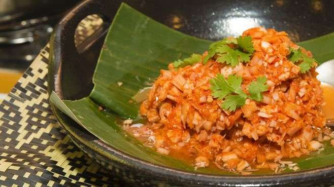

Nonsom Tuhau Recipe

Description
First timers might not like it because of its strong smell (a similar situation in which you'll be in when you first tried tasting Durian), but once you fall in love with the taste, you might just end up finishing it all in one sitting.
To extract the soft part of the Tuhau, peel the hard outer skin of the Tuhau stem.
Ingredients
- 5-8 stems of Tuhau
- 5 birds eye chilli
- 1 lime
- Shrimp paste
- Salt
Steps
- Chop the Tuhau stems finely and put it in a bowl.
- Mash the birds eye chilli and add it to the bowl with the chopped Tuhau stem, and mix them.
- Add salt and lime juice (by squeezing the lime) into the mixture. Stir well to ensure that the flavour is diffused evenly.
- Leave the mixture in the bowl for 1 to 2 hours to marinate.